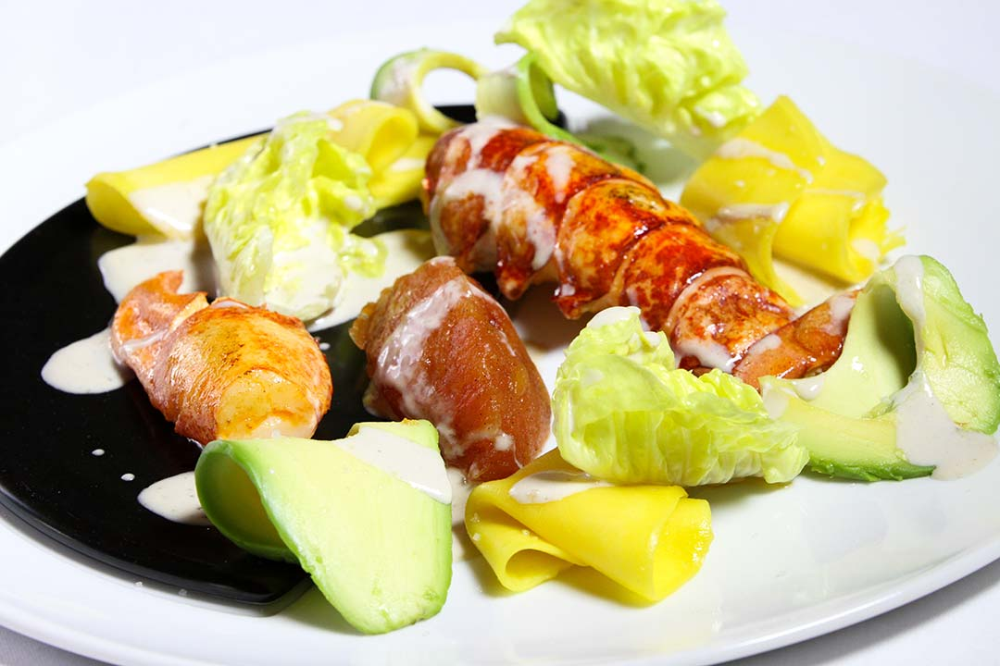
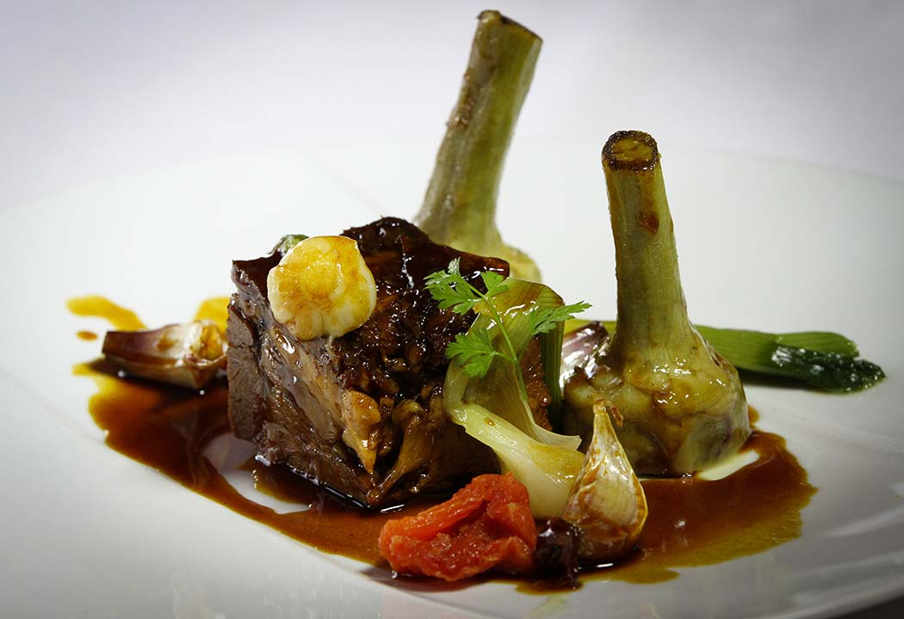
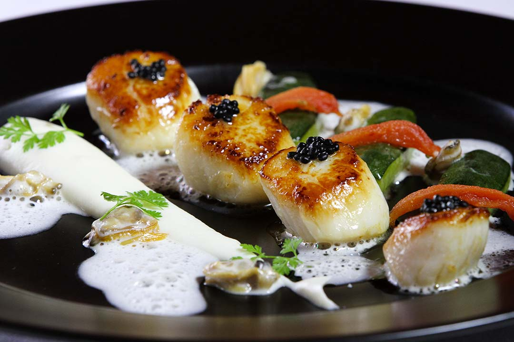
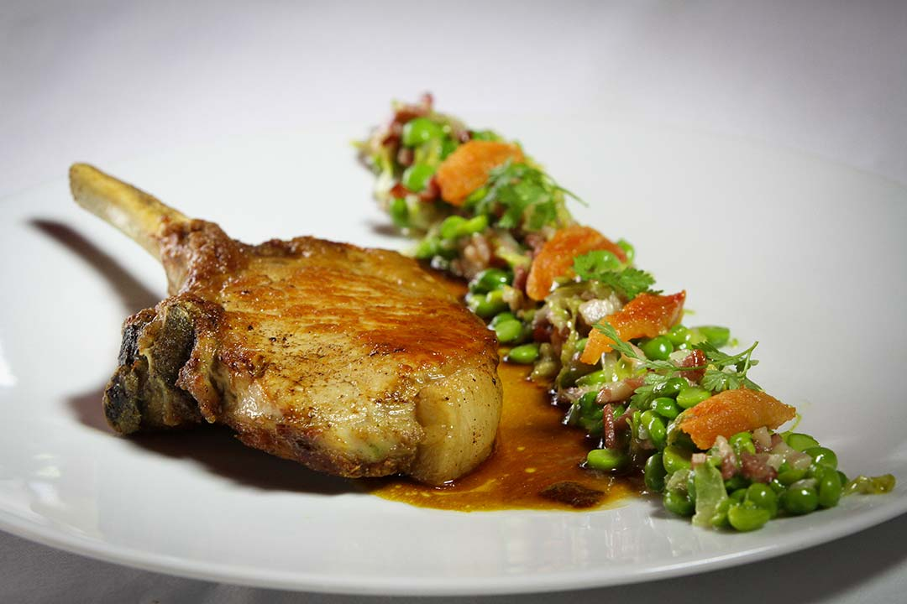

Le homard breton rôti, confiture de tomate à la vanille,
avocat, mangue, sucrine, porto réduit

L'épaule d'agneau confite aux épices douces, artichauts poivrades, jus court

Les noix de St Jacques rôties à la plancha, purée de céleri, courgettes étuvées

La longe de cochon est garnie de févettes à la française et tomates confites